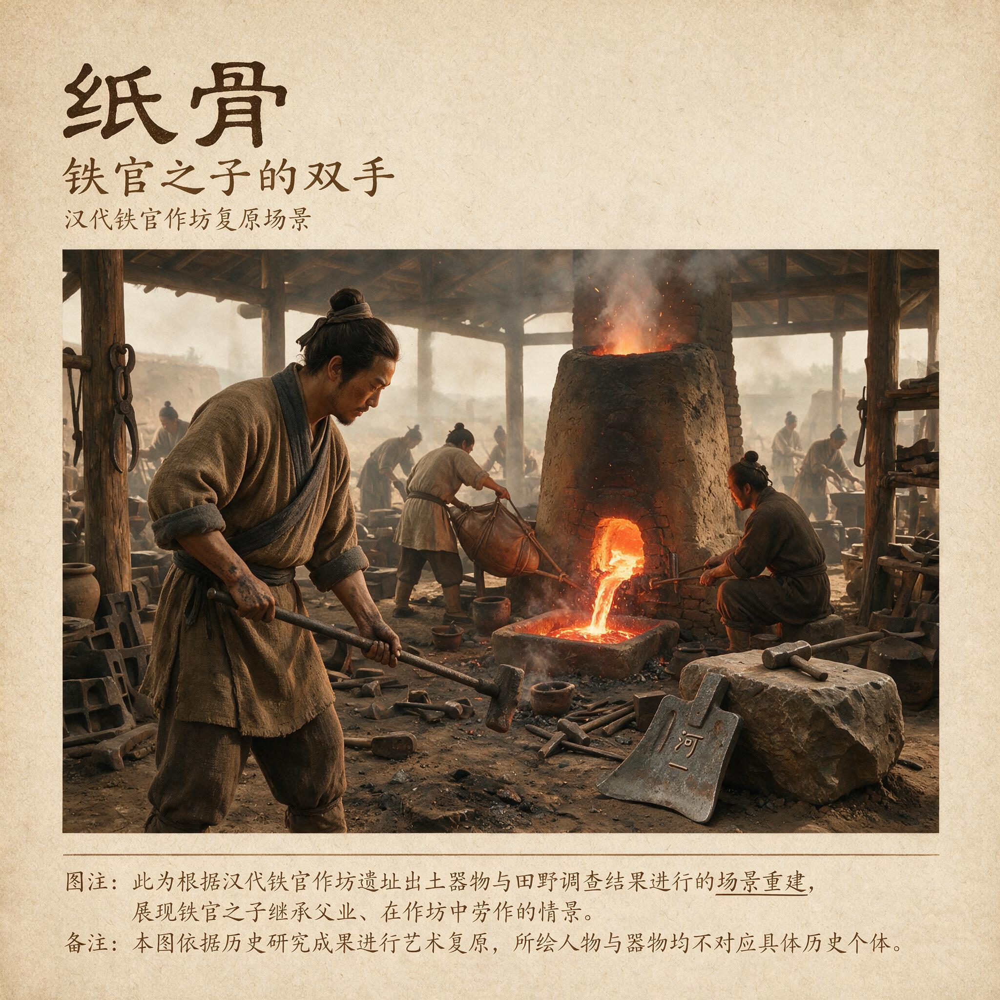

第 1 章
铁官之子的双手
他的手最先认识的是铁。不是铁器——不是那把挂在灶房梁上、母亲用来切菜的黑铁刀，不是父亲偶尔带回家中、带着新淬火蓝痕的犁铧——而是铁本身。是它尚未成形时的样子：从炉中钳出的铁坯，暗红里裹着橘黄，表面浮着一层氧化碎屑，像某种刚剥开皮肤、还在呼吸的东西。
他在五岁那年第一次溜进作坊，看见的就是这个。那块铁坯被放在砧上，两个匠人轮流抡锤，锤面落下去的时候，铁坯塌陷、变扁、向四周延展，碎屑从锤击点向外飞溅，落在泥地上发出细小的嘶嘶声。他站在作坊门口，被热浪推得后退半步，但眼睛没有离开那块铁。他看见它在反复捶打中改变形状——不是碎了，不是断了，而是被重新组织。
那些锤击不是随意的暴力。每一锤都有角度，有力度，有先后次序。年纪大的匠人嘴里不说什么，只在每一下落锤之后用眼神指挥对面的年轻徒弟调整下一锤的位置。铁坯在砧上翻转、折叠、再捶打，原先粗糙的表面渐渐变得致密。杂质从边缘挤出来，像被从肉里挑出的碎骨。
那孩子——敬仲，蔡家的儿子——蹲在门槛外面，把这一切收进眼里，收进耳朵，收进鼻腔里焦炭和热铁混合的气味中。他不知道什么叫“材料微观结构”，不知道什么叫“纤维解离”，不知道三十多年后他会站在洛阳北宫的尚方作坊里，面对一堆浸在水中的树皮和破布，忽然想起这个下午的铁砧。他什么都不知道。他只是看着，听着，呼吸着。
而他的双手——那双还没有铁锤重的手——正在记住某种东西。耒阳的铁官作坊坐落在县城东南角，紧挨着耒水的一条支流。选址不是偶然的。冶铁需要水——淬火要用，鼓风囊的水排驱动也要用——还需要靠近运输水道，因为铁矿石从桂阳郡南部山区运来，走陆路的成本足以吃掉铁官大半的利润。西汉在这里设铁官的时候，看中的正是这条水路。耒水向北汇入湘江，湘江再向北入长江，长江往东是吴越，往西是巴蜀。耒阳的铁器可以沿着这条水道流向整个南方郡县。
铁官是个肥缺——如果按当时官场上的标准来看的话。但那是铁官令的肥缺，不是铁官小吏的。
蔡伦的父亲在铁官衙门里管的是账册和库房，位置不上不下，俸禄不多不少，刚好够一家人在县城里维持体面的温饱。体面，但不宽裕。宽裕的人家不会让孩子在作坊里泡大。
但蔡伦不是被送进作坊的。他是自己走进去的。铁官衙门和作坊之间只隔一道夯土墙，墙上有一扇从不关闭的木门。衙门里的吏员们嫌作坊吵闹——锤击声从早到晚不停，鼓风囊的牛皮囊袋被水力驱动时发出沉闷的呼哧声，像一头永远喘不过气的巨兽——所以他们尽量不去。但一个五岁的孩子不会被噪音赶走。他被吸引。
作坊对他来说不是噪音源，而是一整个正在发生变化的物质世界。矿石堆在院子东南角，从船上卸下来的时候还带着山里的泥土。拣选工蹲在矿石堆旁，用手一块一块地翻看，把含铁量低的脉石扔到一边。他们的手掌上全是老茧，被矿石棱角割出的伤口结了痂又裂开，裂开又结痂，最后变成一层灰褐色的硬壳，和矿石表面几乎分不出来。蔡伦蹲在他们旁边看，不说话，不提问，只是看。
他看见含铁量高的矿石颜色更深，掂在手里更沉，表面有某种暗哑的金属光泽——不是亮，是暗，是那种光线照进去就出不来的暗。拣选工偶尔抬头看他一眼，见他是个孩子，又是衙门里蔡吏员的儿子，便不去赶他。久而久之，他们甚至会在翻到一块好矿石的时候递给他，让他掂一掂。“这块好，”他们说，“你掂掂看，是不是沉手？”他接过来，两只手捧着，矿石的棱角硌着他的掌心。沉。确实沉。他把这个“沉”记住。不是用脑子记，是用手掌记。
作坊的核心是锻炉。炉身用耐火黏土砌成，高一丈有余，底部开有进风口，鼓风囊的水排装置通过一套木制连杆把水流的动力转化成持续的风力。炉温可以达到一千两百度以上——这个数字蔡伦当然不知道，但他的身体知道。他第一次站到离锻炉三步远的地方时，脸上的皮肤感到一种紧，像被什么东西从四面八方拉住。那是热辐射。匠人们管它叫“火气”。火气看不见，但能感觉到，而且有层次：三步远是紧，两步远是灼，一步之内，麻布衣服开始发黄卷曲，再靠近就会烧起来。
匠人们在炉前操作时穿的是浸过水的麻衣，水在靠近炉口时蒸发成白汽，裹着他们的身体，像一层临时的铠甲。他们从炉中钳出铁坯的动作极快——不是怕烫，是必须在铁坯温度降到可锻温度以下之前把它送到砧上。
这是火候。火候不是时间，不是温度计上的刻度，是一整套身体判断：铁坯的颜色从亮白到橘黄到暗红，每个色段对应着不同的可锻区间；匠人的眼睛必须在这色段滑动的过程中抓住最佳时机，早了铁太硬，锤不动，晚了铁太软，捶了也是白捶。
蔡伦在作坊里泡了整整一个夏天之后，已经能凭颜色判断出炉温的大致状态。不是有人教他——铁官作坊不是学堂，没有师傅带徒弟的固定规程，技艺靠的是看、试、错、再看。他只是在看。他看匠人从炉中钳出铁坯的那一刻，铁坯表面的氧化层在接触空气的瞬间闪出一层蓝紫色的光，然后迅速变暗。他看匠人把铁坯放在砧上，第一锤落下去的位置永远是铁坯的中心偏左——因为右手抡锤的人，锤击的力线天然偏左，而第一锤决定了后续所有锤击的基准面。
他看铁坯在反复捶打中从一块不规则的团块变成扁平的条状，再从条状折叠回去，再捶打，再折叠。折叠的次数，匠人们心里有数。那不是记录在册的数字，是记在肌肉里的节奏。三折铁做锄头镰刀，五折铁做刀剑，七折以上的铁——那种反复折叠锻打直到材料内部形成层层叠叠纹理的铁——用来做上供给朝廷的器物。
那不是蔡伦父亲管的东西。那是铁官令亲自过问的。但蔡伦看见了。他看见那块七折铁被锻成一把剑坯的时候，剑身上隐约浮现出水波状的纹路。那种纹路不是刻上去的，不是画上去的，是从铁的内部长出来的。每一次折叠都在材料内部留下一个界面，七次折叠意味着六十四个界面层叠在一起，在锻打中被压成不足一指厚的剑身。那些界面不是裂缝，不是弱点，恰恰相反——它们让铁变成了另一种东西。杂质被打出去了，碳在反复加热中渗入铁的表面，形成一层硬而韧的壳，折叠又把这层壳揉进内部，让硬和韧不再分离。这是铁官作坊的核心秘密：不是把铁炼得更硬，而是把硬和韧组织在一起。
硬的东西容易断，韧的东西容易弯，只有把硬和韧一层一层地叠起来，才能得到既不会断也不会弯的材料。
这个道理，蔡伦是在很多年后才用语言表达出来的。但在作坊里，他的身体已经知道了。
他看匠人把剑坯浸入淬火池的那一刻，水在接触剑身的瞬间沸腾，发出尖锐的嘶声，白色蒸汽腾起一人多高。剑身在水中颤抖，发出极细微的鸣响，像某种活物在承受剧痛。匠人握着剑柄，手腕保持绝对稳定——淬火时任何晃动都会导致剑身冷却不均匀，产生内部应力，让剑在日后的使用中断裂。
这是最关键的一步。前面所有的拣选、熔炼、捶打、折叠，最后都要在淬火的几秒钟内兑现。时机早一瞬，剑太脆；晚一瞬，剑太软。匠人判断时机的依据是剑身的颜色在水汽中隐约透出的那一抹暗红——必须在它消失之前入水，必须在它完全消失之后出水。这中间的尺度，没有人能量化。匠人的手知道。蔡伦的手也在学。他那时候还太小，不能抡锤，不能掌钳，甚至不能靠近淬火池——池水在淬火瞬间会溅出滚烫的水珠，能在孩子的手臂上烫出水泡。
但他可以在作坊的角落里做一件事：拣选碎料。每次锻打结束后，砧台周围会散落一层铁屑和氧化皮，大的有指甲盖大小，小的像粗沙。匠人们不把这些碎料当回事，扫到一边，攒多了就回炉重熔。
但蔡伦发现，这些碎料里藏着某种东西。不同批次、不同锻打阶段的碎料，颜色不同，硬度不同，断口的纹理也不同。他蹲在地上，把碎料按颜色分类——暗灰色的、深黑的、带着蓝紫色氧化层的——然后用手指捏，用指甲划，感受它们的硬度差异。有些碎料一捏就碎，粉末沾在指尖上，在阳光下闪着细碎的银光。有些碎料很硬，指甲划上去只留下一道浅痕。他不知道为什么同样的铁会变成不一样的东西。他只是把这种差异记住，记在指尖上。
这种记忆不是知识。知识可以用语言传递，可以从一个人嘴里说出来，进入另一个人的耳朵，再变成那个人的理解。但身体记忆不是这样传递的。它必须通过重复的、持续的身体接触来建立。
铁匠的手掌能分辨出铁坯温度在五十度范围内的差异，不是因为有人教过他们温度理论，而是因为他们的手掌在数千次、数万次的接触中，建立了一套不需要意识参与的判断系统。这套系统的精度，在有些维度上超过了意识层面的判断。一个老铁匠说不出铁坯在摄氏多少度时最适合锻打，但他能感觉到——他的手在靠近铁坯时，皮肤上的热感受器会在某个特定的温度区间发出一个特定的信号，这个信号经过多年重复，已经绕过了语言中枢，直接连接到了动作中枢。他的身体知道，即使他的脑子不知道。
蔡伦在耒阳铁官作坊里度过的那些年，就是在建立这种身体记忆。他那时候当然不知道这套记忆将来会用在什么地方。他不知道铁官作坊的工艺逻辑——对材料施以可控的物理暴力，使其解离、重组并获得新的强度——会在三十年后被迁移到一种完全不同的材料上。他不知道“挫、捣、抄、焙”这套造纸工序，和“拣选、熔炼、捶打、淬火”这套冶铁工序之间存在结构性的同源关系。
他不知道树皮和麻头的纤维，在浸沤、捶打和抄造中所经历的物理变化，与铁坯在反复折叠锻打中所经历的微观重组，遵循着同一套底层逻辑：把材料打散，把杂质排出，把有用的部分重新排列组合，然后施加一个决定性的转化——淬火，或者焙干——让新的结构固定下来。他不知道这些。
他只是一个孩子，蹲在铁官作坊的角落里，把碎铁屑按颜色分类，用手指感受它们的硬度差异，在锻炉的热浪和淬火池的蒸汽中度过一个又一个下午。
但他正在变成那个唯一的人。那个在三十多年后，面对一堆浸沤了数日的树皮纤维，能够用手指捏出纤维解离程度的人。那个能够在脑海中把“捶打”这道铁匠工序翻译成“捣浆”这道造纸工序的人。那个知道什么时候该施加压力、什么时候该放松、什么时候该让材料在水中自行舒展的人。那个后来将古代造丝纸与造树皮布纸两种工艺整合起来，以造丝纸工艺的制纸工法，结合造树皮布纸工艺的材料学知识，从动物性材料改为转用植物纤维来造纸的人。那个发明造纸术的人——不是因为他比别人聪明，而是因为他的双手在少年时代已经建立了一套别人没有的感知系统。
这套系统是铁官作坊的副产品，是铁官家庭的副产品，是耒阳这个地方的副产品，是一整套制度安排和历史条件叠加之后偶然落在这个孩子身上的结果。造纸术的诞生不是孤立的天才事件。它是一个人在特定的制度位置上，调用他特定的身体记忆，面对特定的材料时，必然会发生的事情。
但那是三十年后的事。现在，他还只是一个孩子。他的手还太小，握不住铁锤。他的父亲还在铁官衙门的库房里抄写账册，盘算着一家人的开销，盘算着下一季的赋税，盘算着这个铁官小吏家庭在东汉初年湘南地区的生存策略。而那些账册上的数字，正在悄悄收紧。东汉前期的赋税制度继承西汉而有所调整，但基本结构未变：田租、算赋、口赋、更赋，外加郡县自行征收的各种杂调。桂阳郡地处湘南，山地多、水田少，粮食产量远不及中原郡县，但朝廷核定的田租定额并不因此减免。
铁官衙门直属大司农，不在郡县财政体系之内，这意味着铁官吏员的俸禄由国家统一拨付，不受地方丰歉影响——听起来是铁饭碗，但铁饭碗的代价是，铁官家庭必须自行承担地方上的各种人头税和杂调，而这些税赋的核定权在郡县官吏手中。
郡县与铁官之间的关系，从来不是简单的上下级。铁官占用地方水土，征发地方徭役，生产出来的铁器却大部分运往外地，留给本地的配额有限。地方官吏对铁官的态度，表面恭敬，暗中掣肘。铁官吏员在地方上的处境，就像铁官本身在制度中的位置一样——名义上直属中央，实际上嵌在地方权力网络里，两头都要应付。
蔡伦的父亲应付了二十年。他的策略是低调、顺从、不惹事。库房账册做得干干净净，每年上计从不拖延，对郡县官吏的额外索求能应则应，不能应的也尽量不得罪。这种策略让他在铁官衙门里保住了位置，但也让他耗尽了上升的空间。铁官令换过三任，每一任都是从洛阳空降的，在耒阳待上三五年，做出些政绩，便调回中原升迁。
而蔡伦的父亲，二十年如一日地守在库房里，从青壮年守到鬓角发白，职位纹丝不动。这不是因为他无能。恰恰相反，正是因为他对库房账目太熟悉了，熟悉到每一任铁官令都必须依赖他才能理清前任留下的烂账，所以他反而被钉死在这个位置上。他的能力成了他的牢笼。这个牢笼的边界，在蔡伦十二岁那年变得清晰起来。那一年，桂阳郡来了一个新太守。
新太守上任照例要巡视属县，耒阳是铁官所在，自然在巡视之列。铁官令提前半个月就开始准备迎接，作坊停工三天打扫卫生，库房里的铁器重新摆放整齐，账册重新誊抄了一份干净的副本。蔡伦的父亲负责最后一项。他带着两个书吏，在油灯下抄了整整五个晚上，把二十年来的账目压缩成一份简明扼要的汇报。汇报的数字没有问题——铁官每年的产量、上缴量、库存量、损耗率，每一项都清清楚楚。
但新太守不看数字。他到了铁官衙门，喝了三杯酒，收了铁官令私下递过去的一对错金铁刀，然后随口问了一句：“铁官吏员，可有子弟愿入郡学？”
这是一句看似无关的话。郡学是地方官学，招收郡县官吏子弟，学成后可举孝廉、茂才，进入仕途。对于铁官家庭来说，这是一条上升通道——铁官是技术官僚系统，上升空间有限，而通过郡学进入地方行政系统，前途要广阔得多。
但太守问这句话的时候，眼睛没有看蔡伦的父亲。他看的是铁官令。铁官令会意，回答说铁官衙门人少事繁，吏员子弟多在作坊帮工，恐怕没有合适的。太守点了点头，没再说什么。蔡伦的父亲站在旁边，端着酒壶，手没有抖，脸上没有表情。他伺候了二十年官场，不需要任何人解释，他听得懂。
太守不是真的在问有没有子弟愿入郡学。太守是在提醒铁官令：你们铁官的人，不要把手伸到我的地盘里来。铁官令的回答，是在向太守保证：不会。而蔡伦的父亲，端着酒壶站在那里，就是那个“不会”的活证据。那天晚上，蔡伦的父亲回到家里，坐在灶房的小桌前，很久没有说话。母亲把饭菜端上来，他吃了几口就放下了筷子。
蔡伦坐在对面，看见父亲的手指在桌面上无意识地画着圈——那是他算账时的习惯动作，但此刻他面前没有账册。过了很久，父亲开口了。他没有说今天在衙门里发生了什么，他只是问蔡伦：“你在作坊里

汉代铁官作坊复原场景
AI 生成插图，非史实影像。
泡了这些年，学会什么了？”蔡伦想了想，说：“我能看出来铁坯的火候到不到。”父亲点了点头，又问：“还会什么？”蔡伦说：“我能摸出来碎料的硬度不一样。”父亲又点了点头。他没有问第三个问题。他只是看着自己的儿子，看了很久，然后说了一句：“这些没用。”
这句“没用”不是否定。不是父亲否定儿子的能力。是一个在制度夹缝里挣扎了二十年的铁官小吏，在告诉他的儿子一个残酷的事实：你在作坊里学到的那些东西——那些关于火候、力度、材料转化的身体记忆——在铁官衙门这个体系里，换不来一个上升的位置。铁官令不会因为你儿子会看火候就举荐他。郡太守不会因为你儿子能摸出碎料的硬度就让他入郡学。
这些能力有用，但不在这个制度里有用的那种“有用”。制度承认的“有用”是另一套东西：是家世，是举主，是人际关系网，是能够在酒桌上不动声色地站对位置的能力。这些，蔡伦的父亲有，但他用了二十年也没能把它转化成真正的上升。
他的儿子——这个在作坊里泡大的孩子，双手沾满了铁屑和氧化皮，眼睛能在半秒内判断出炉温的变化——他的起点比父亲更低。因为他连父亲那套应对官场的能力都没有。蔡伦在十二岁那年第一次意识到，自己的双手可能永远碰不到铁砧了。不是因为他不够好，而是因为铁官家庭的边缘地位正在把他推向另一个方向。这个方向不是他自己选的。
没有人问过他愿不愿意。但这个方向已经在那里了，像耒水河道的某个分岔口，水流的方向不是由水滴决定的，而是由河床的形状决定的。而东汉前期湘南地区一个铁官小吏家庭的河床，正在把他引向一个他当时还无法想象的去处。入宫为宦。这四个字，在他十二岁的那个夜晚还没有被任何人说出来。
但它已经在父亲的沉默里了。在母亲第二天早上红肿的眼眶里了。在铁官衙门同僚们忽然变得闪烁的眼神里了。东汉的宦官选纳制度，在地方上有一套不成文的运作机制。朝廷定期从各郡国选拔年幼男子入宫，入选者须经阉割，在蚕室中度过生死关，然后进入宫廷服务体系。
选拔的标准名义上是“良家子”——家世清白、无犯罪记录——但实际上，真正良家出身的子弟不会走这条路。被送进宫的，通常是两种人：一种是犯罪官员的家眷，被没入宫中的；另一种是边缘吏员家庭的子弟，家里养不活，或者养活了也没有出路，只能走这条最残酷的通道来换取家庭在制度中的一线生机。蔡伦的家庭属于第二种。
铁官小吏，听起来是官，实际上在地方权力结构中处于边缘位置。铁官令有上升通道，铁官工匠有手艺可以传给子孙，但铁官小吏——那些管账册、管库房、管文书的人——他们的位置太容易被替代了。任何一个识字的人，经过三个月训练，都能接手他们的工作。他们的价值不在能力，在熟悉程度，而熟悉程度在制度中是不被定价的。
蔡伦的父亲用了二十年证明了这一点。现在，他的儿子面临着同样的结构性困境：留在铁官体系里，上限就是父亲的位置——库房里抄账册的小吏，一辈子被人需要，一辈子不能上升。走别的路？郡学的门已经关上了，地方豪族不会和一个铁官小吏的家庭联姻，经商是贱业，从军需要家族背景。剩下的路，只有一条。
这不是命运的偶然拨弄。这是制度夹缝中的残酷计算。铁官家庭在东汉前期的社会结构中处于一个特殊位置：他们不是农民，不是工匠，不是商人，不是士族，他们是依附于国家专营体系的技术官僚家庭，这个体系给了他们基本的生存保障，但也切断了他们向其他社会阶层流动的通道。
他们的命运和铁官制度绑在一起，而铁官制度本身是中央集权的一个工具——工具不需要有自己的意志，工具只需要好用。当一个铁官小吏家庭生出了多余的儿子——那个无法在铁官体系中找到位置的、又不可能回去种地的儿子——把他送进宫，就是这个家庭对制度做出的最后一项贡献。用一个人的身体，换一家人的生存。具体是怎么操作的，史料没有记载。蔡伦入宫的确切年份、途径、中间人，全都湮没在东汉前期地方档案的缺失中。
但可以推断的是，这件事不可能由蔡伦的父亲独自完成。宦官选纳涉及地方官员的推荐、朝廷使者的审核、阉割手术的安排和入宫后的安置，每一个环节都需要打通关节。对于一个铁官小吏来说，打通这些关节的资源从哪里来？只能是铁官衙门内部。铁官令——那位在太守面前保证铁官的人不会把手伸到地方事务中的铁官令——很可能在这件事上出了力。
这不是因为他心善，而是因为把一个铁官吏员的子弟送进宫，对铁官衙门来说是一笔合算的投资：宫里有了自己的人，以后在朝廷的预算分配和政绩考核中，或许能多一分照应。这种投资不需要花多少钱——打通地方关节的费用可以从铁官衙门的公费中列支，只要账册做得干净——但潜在的回报很大。一个在宫里站稳脚跟的宦官，将来如果能进入尚方、考工或者少府系统，对铁官衙门来说就是一条通往权力中心的暗线。
蔡伦不会知道这些算计。他只知道，在他十二岁那年冬天，家里来了一个说洛阳口音的陌生人。那人穿着体面，说话客气，但眼睛在看他时有一种奇怪的神情——不是看一个孩子的神情，是看一件货物的神情，在估算重量、品相和运输成本。那人和父亲在里屋谈了一个时辰，出来时父亲的眼睛是红的，母亲已经在灶房里哭出了声。陌生人走后，父亲把他叫到跟前，说了三个字：“收拾吧。”
他没有问收拾什么。他已经在作坊里学会了用眼睛看。他看懂了父亲的表情，看懂了母亲的眼泪，看懂了院子里那棵老槐树下已经打好的包袱。包袱里是两套换洗衣服，一双新布鞋，一小袋路上吃的干粮。没有铁官作坊里的任何东西。没有碎铁屑，没有矿石样本，没有他蹲在地上分类收集的那些氧化皮。那些东西不属于洛阳。不属于他要去的地方。他站在院子里，冬天的风吹过耒水河谷，带着湿冷的水汽和远处锻炉的焦炭味。
他忽然想起五岁那年第一次溜进作坊时看到的画面：暗红的铁坯在砧上被反复捶打，杂质从边缘挤出来，铁在折叠中变得致密。那时候他不知道，他自己就是那块铁坯。铁官家庭是他的熔炉，作坊里的那些年是他的锻打，而即将到来的蚕室之刑，将是他的淬火——那决定性的、不可逆转的、在极短时间内改变一切物理性质的一步。他的手在寒风中握紧，然后松开。
掌心里什么都没有。但掌心的皮肤记得碎铁屑的硬度，记得矿石的沉手，记得从炉口扑面而来的那一层热浪的层次感。这些记忆不会被切掉。
不会随着他即将失去的东西一起离开。它们已经沉到了身体的最底层，沉到了语言无法触及的地方，沉到了连他自己都不知道在等待什么的地方。它们在等一个制度位置。一个能够调用皇家工坊全部资源的位置。一个能够把铁官作坊的捶打逻辑迁移到另一种材料上的位置。一个叫做尚方令的位置。
那个位置，还在三十年后。而现在，他只是一个十二岁的少年，站在耒阳冬天的院子里，听着母亲在灶房里压抑的哭声，看着父亲背对着他站在门口，肩膀微微发抖。远处，铁官作坊的锻炉还在燃烧，锤击声隔着夯土墙传来，闷闷的，像心跳。他听着那个声音，把它记住。
这是最后一次了。明天，他就要离开这个地方。离开耒水，离开铁官作坊，离开那座他蹲了七年的锻炉和淬火池。明天之后，他的双手将不再触碰铁与火。它们将握住另一种东西——他当时还不知道是什么。但他的手已经在准备了。已经在那些碎铁屑和氧化皮里，在为碎料分类的指尖上，在判断炉温变化的目光中，准备好了。
只是还需要三十年，还需要一座皇家工坊，还需要一个叫尚方令的官职，还需要面对一堆浸在水中、散发着腐烂气味的树皮和破布时，那些沉在身体最底层的记忆才会苏醒。才会告诉他：这些纤维和铁是一样的。把它们打散，把杂质排出，把有用的部分重新排列，然后施加一个决定性的转化。
据《后汉书·宦者列传》所记载，自古以来，书籍文档都是用竹简来做书写载体的，后来出现了质地轻柔的缣帛，但是用缣帛制纸的费用很高昂，而竹简又笨重，于是蔡伦想进行技术创新，改用树皮、破布、麻头和鱼网等廉价之物造纸，大大降低了造纸的成本，为纸的普及准备了条件。纸，就是这样造出来的。但不是现在。现在，他只是站在院子里，听着远处的锤击声，在冬天的风里握紧一双空手。